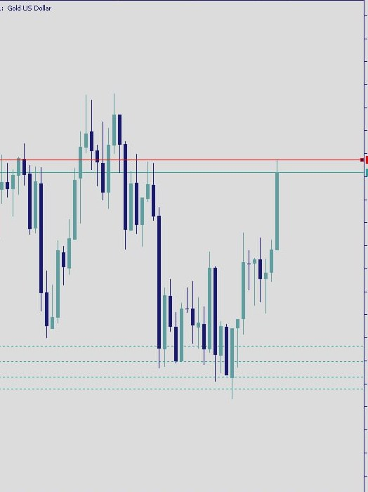

The trader who never named the trend
I once watched a trader I was mentoring lose a whole afternoon to gold. Not to a crash. To himself.
Every green candle, he bought. Every red candle, he panicked out and flipped short. He was busy for six hours straight, fingers on the trigger, heart rate climbing. By the close he was down, tired, and could not tell me one thing about what the market had actually done that day.
So I asked him a simple question. "Before your first click this morning, was gold trending up, trending down, or going nowhere?" He went quiet. He had never asked it. He had traded a hundred candles without naming the one thing that would have told him whether any of them mattered.
That is what this piece is about. Not entries. Not a signal. Just the honest work of learning to read a gold chart before you risk a single dollar on it.
Why you name the trend before you do anything else
Most losing trades I have reviewed, my own included, share one root cause. The trader reacted to a candle without knowing which direction the market was leaning. They were answering a question the chart had not asked yet.
Reading gold's trend first does something quiet but powerful. It turns a wall of noise into a story with a direction. Once you can say out loud, "gold is leaning up and the structure looks orderly," or "gold is drifting down and every bounce keeps failing," you stop treating every wiggle as a call to action. You start trading in the direction the market is already telling you about, instead of fighting it every fifteen minutes.
This is the discipline point, and it is the whole reason I teach structure before anything else. Reading structure keeps you from chasing every candle. It is the difference between having an opinion and having a map.
The three states: uptrend, downtrend, and range
At any moment, gold is doing one of three things, and only three. Learning to sort a chart into one of these buckets is ninety percent of the skill.
An uptrend is a market that keeps making higher highs and higher lows. Each push up reaches a little further than the last, and each pullback stops short of the previous dip before turning back up. Picture a staircase climbing to the right. That stair-step of higher highs and higher lows is the signature of buyers being in control.
A downtrend is the mirror image: lower highs and lower lows. Every rally runs out of steam sooner than the one before, and every drop cuts deeper. The staircase descends. Sellers are setting the pace.
A range is neither. Price bounces sideways between a rough ceiling and a rough floor, making roughly equal highs and equal lows. Nobody is winning. Ranges are where a lot of impatient traders donate money, because they keep expecting a trend that has not started yet.
On a chart like the one above, before any indicator, first ask the only question that matters at this stage: higher highs, or lower highs? Your answer sorts the whole chart into one of these three states, and everything else you do sits on top of that answer.
Market structure: reading the swing points
When traders say market structure, they mean the sequence of highs and lows that the price is carving out over time. It is the skeleton underneath the candles. The trend is just the shape that skeleton makes.
To read it, you learn to spot swing points. A swing high is a peak with lower candles on either side. A swing low is a trough with higher candles on either side. Mark a few of the obvious ones and then simply read them left to right, like words in a sentence.
Higher high, higher low, higher high, higher low. That sentence says uptrend. Lower high, lower low, lower high, lower low. That sentence says downtrend. The moment the sentence breaks, when an uptrend suddenly prints a lower low, or a downtrend prints a higher high, the market is telling you the structure may be shifting. It is not a command to trade. It is a change in the weather worth respecting.
You do not need every swing. You need the obvious ones. If you have to squint to decide whether something is a swing high, it probably is not important enough to build a decision on.
Support and resistance: the floors and ceilings
Once you can read the swings, support and resistance almost draws itself. Support is a price zone where falling has repeatedly slowed or stopped, a floor buyers have defended before. Resistance is the opposite, a ceiling where rallies have repeatedly stalled.
Two things matter about these zones, and I want to be honest about both.
First, treat them as zones, not razor-thin lines. Gold is volatile. A level that held to the exact dollar last month will not behave that precisely today. Draw a band, not a wire.
Second, they are not walls. They are areas where the odds of a reaction have historically been higher, nothing more. Support does not "hold" because the chart owes you anything. Sometimes price slices straight through, and that break is itself information about who is winning. A level respected tells you one story; a level broken tells you another. Both are the market talking. Your job is to listen, not to argue.
The moving average as a trend filter, not a trigger
A moving average, like an EMA, is one of the calmest tools on the chart. It plots the average price over a chosen window, and because it smooths out the jitter, it gives you a clean read on direction without the noise.
Here is how I use one, and just as importantly, how I do not.
I use it as a filter. When price is riding above a rising moving average, that agrees with an uptrend read. When price sits below a falling one, that agrees with a downtrend. The slope of the line is a second opinion that confirms the story your swing points are already telling. If the structure says up and the moving average says up, the picture is consistent, and consistency is what you want before you do anything.
I do not use it as a trigger. A price tag touching a moving average is not a "buy here" or "sell here." Plenty of traders lose money treating a line-cross like a green light. The moving average tells you the climate. It does not tell you when to step outside. Keep it in the role of trend filter, and it will serve you for years.
Breakouts and retests, explained plainly
A breakout is simply price pushing through a support or resistance zone that had been holding it back. A range ceiling finally gives way; a downtrend's line of lower highs is suddenly broken. It can mark the start of a new leg, and that is why breakouts get so much attention.
But here is the part beginners skip. Not every break means what it looks like. Price often pokes through a level, sucks in a crowd of excited traders, and then falls straight back inside. That is a false break, and it is one of the most reliable ways to lose money in a hurry.
This is where the idea of a retest earns its keep. After a genuine break, price will often come back to the level it just broke, as if checking that the old ceiling now behaves like a new floor. Watching how price behaves on that return, calmly, without a position, tells you far more than lunging at the first candle through the line. Patience here is not timidity. It is you refusing to be the crowd that gets trapped.
Why the higher timeframe sets the context
If you take one habit from this whole piece, take this one. Always read the bigger picture before the smaller one.
A five-minute chart can look like a screaming uptrend while the daily chart is quietly grinding down. Both are true. But if you only ever look at the small timeframe, you will keep buying into what is, from a distance, a falling market, and wonder why your winners never last. The higher timeframe sets the context. It tells you which direction has the wind behind it. The lower timeframe is only for seeing detail once you already know which way you are facing.
Think of it like weather and a single afternoon. The season is the higher timeframe. A warm hour in winter is the lower one. The warm hour is real, but you would be a fool to plant your crops on it. Read the season first. Then, and only then, zoom in.
Start on the higher timeframe
Open the bigger picture first, a daily or a four-hour view, and get the context before you ever touch a smaller chart. Ask which direction gold is leaning across weeks, not minutes. This is the frame everything else hangs on.
Name the trend out loud
Read the swing points left to right. Higher highs and higher lows means uptrend. Lower highs and lower lows means downtrend. Roughly equal highs and lows means range. Say it plainly before moving on. If you cannot name it, the honest answer is often "range," and that is fine.
Mark the obvious floors and ceilings
Draw the few support and resistance zones that are genuinely clear, as bands rather than thin lines. Skip the ones you have to squint at. You are mapping where the market has reacted before, not decorating the chart.
Add a moving average as a filter
Drop on one moving average and read its slope only to confirm the trend you already named. Rising and price above it agrees with up; falling and price below it agrees with down. Use it to check your read, never as a trigger to act.
Where this actually takes you
None of this promises a good week. I want to be plain about that, because I post my losing trades to the same channel where I post everything else, and I have no interest in selling you a fantasy.
What reading structure gives you is not a win. It is a filter. It quietly removes a whole category of avoidable mistakes, the impulsive click, the trade against an obvious trend, the lunge at a false break. It slows you down at exactly the moments that used to cost you. Over months, that filtering is what separates traders who are still here from traders who burned out in their first busy afternoon.
Protect first. Then master the reading of the chart, patiently, one honest question at a time. The growth, if it comes, is the long, slow reward for the two that came before it. That is the whole game, and it is a game measured in years, not candles.
Frequently Asked Questions
How do I know if gold is in an uptrend or downtrend?
Read the swing points in order. If gold is making higher highs and higher lows, buyers are in control and it is an uptrend. If it is making lower highs and lower lows, sellers are in control and it is a downtrend. If the highs and lows are roughly level, it is a range, not a trend. Always confirm this on a higher timeframe before trusting it.
What is market structure in trading?
Market structure is the sequence of highs and lows a price carves out over time, the skeleton underneath the candles. Reading it means tracking whether those swing points are stepping up, stepping down, or moving sideways. That sequence is what defines the trend and tells you when it may be shifting.
What does a moving average tell you?
A moving average smooths out price to give you a cleaner read on direction. Its slope acts as a trend filter, confirming whether the structure you have read is up, down, or flat. It is best used to agree with your read, not as a signal by itself. A price touching the line is not a reason to trade.
Does higher timeframe matter for reading gold?
Yes, more than almost anything. A small timeframe can show a strong move that runs against the bigger picture. The higher timeframe sets the context and tells you which direction has real weight behind it. Read it first, then zoom in for detail, never the other way around.
About the Author
Raphael, founder of Black Gold Market
I run Black Gold Market, a community of around 8,900 traders built on radical transparency. I post real charts, including my losing trades, because pretending otherwise would help no one. I sell no signals and promise no returns. My whole approach is the long game: protect your capital first, master the reading of the chart second, and let any growth be the slow reward for the discipline that came before it.
Risk disclaimer: This article is education only and is not financial advice. Trading gold and CFDs carries a substantial risk of loss, and most retail traders lose money. Any examples of structure, trends, or growth here are illustrations for teaching, not predictions of what any market will do. Past performance does not guarantee future results. Only ever trade capital you can afford to lose.